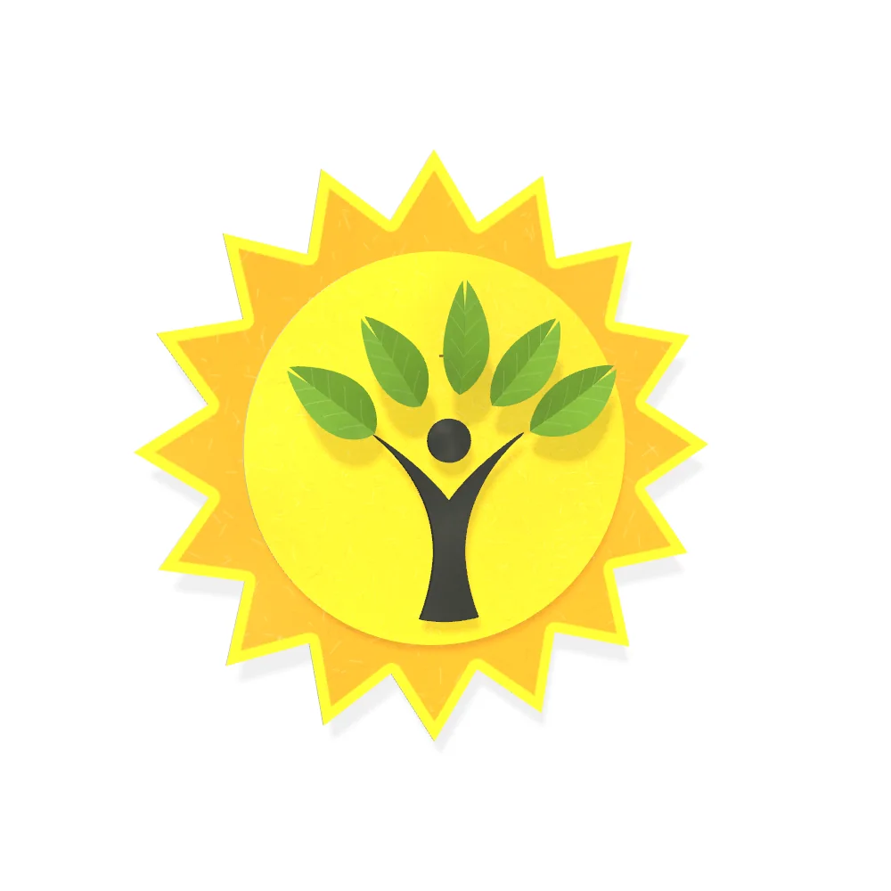
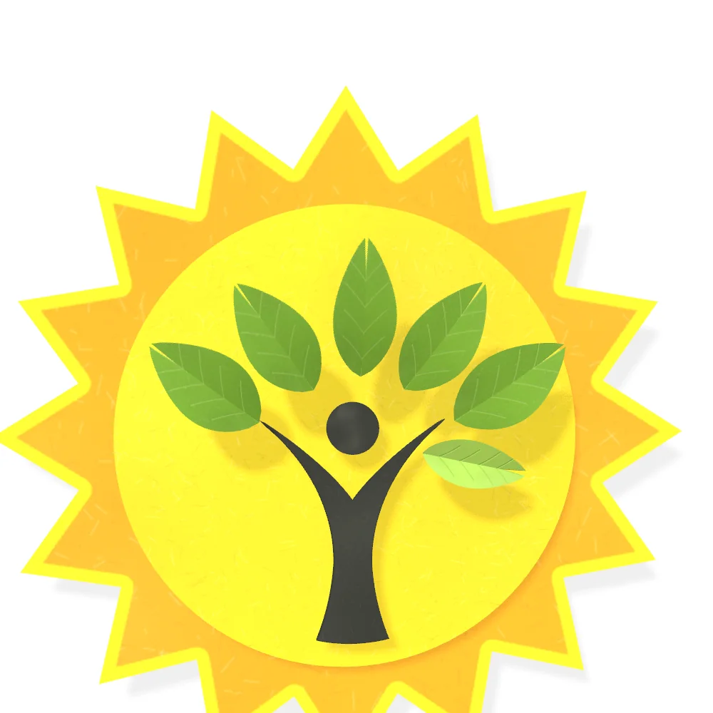
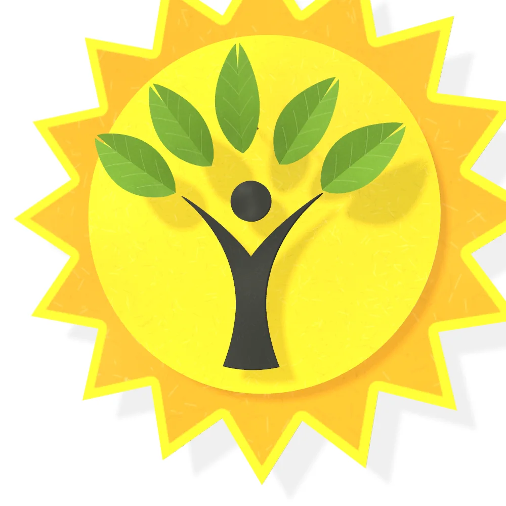

Molecular diagnosis, made accessible to all.
Lightening Lives is a healthcare technology company in Hyderabad. We develop REASSURED genetic tests for inherited disorders: simple, affordable and usable outside specialised laboratories.
Tests are supplied to institutions and public health programmes.
Scroll to look closer
The leaves
A genetic test for any inherited condition you need to screen for.
Each of our tests began with a programme that needed one. There are five so far, and the next can be yours.
- Sickle cell anaemia
- Thalassaemia
- Spinal muscular atrophy
- Duchenne muscular dystrophy
- Blood coagulation disorders
- Any other, on request

At the centre
Every test is for a person. We reach them through institutions.
We work with hospitals, laboratories and clinicians, with district health officers and government programmes, and with NGOs and CSR funders. Most of that work starts as a collaboration.
See who we work with